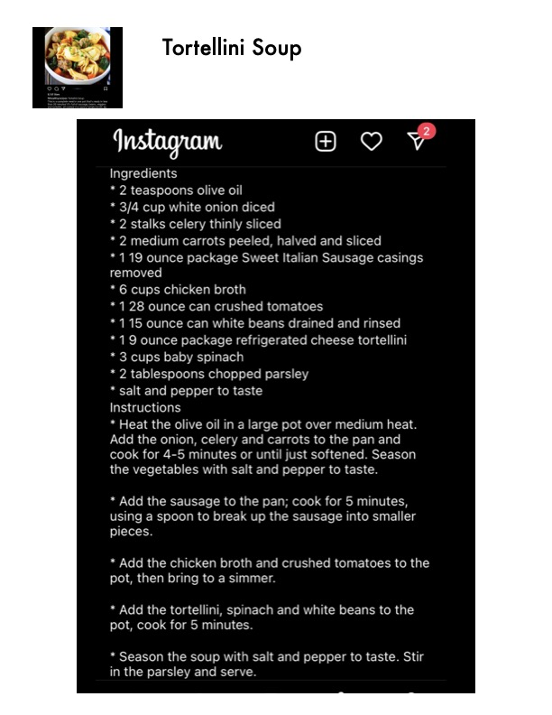

Tortellini Soup

Original cookbook page 232
A hearty soup with sweet Italian sausage, cheese tortellini, white beans, and fresh vegetables in a tomato broth.
Prep: 15 minutes • Cook: 15 minutes • Total: 30 minutes
Ingredients
- 2 teaspoons olive oil
- 3/4 cup white onion, diced
- 2 stalks celery, thinly sliced
- 2 medium carrots, peeled, halved and sliced
- 1 19-ounce package Sweet Italian Sausage, casings removed
- 6 cups chicken broth
- 1 28-ounce can crushed tomatoes
- 1 15-ounce can white beans, drained and rinsed
- 1 9-ounce package refrigerated cheese tortellini
- 3 cups baby spinach
- 2 tablespoons chopped parsley
- Salt and pepper to taste
Instructions
- Heat the olive oil in a large pot over medium heat. Add the onion, celery and carrots to the pan and cook for 4-5 minutes or until just softened. Season the vegetables with salt and pepper to taste.
- Add the sausage to the pan; cook for 5 minutes, using a spoon to break up the sausage into smaller pieces.
- Add the chicken broth and crushed tomatoes to the pot, then bring to a simmer.
- Add the tortellini, spinach and white beans to the pot, cook for 5 minutes.
- Season the soup with salt and pepper to taste. Stir in the parsley and serve.
Recipe #232 from collection